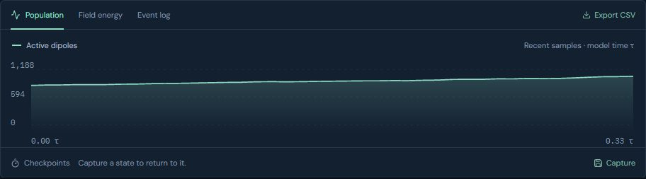
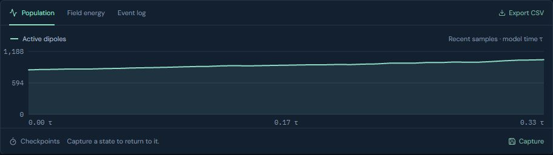
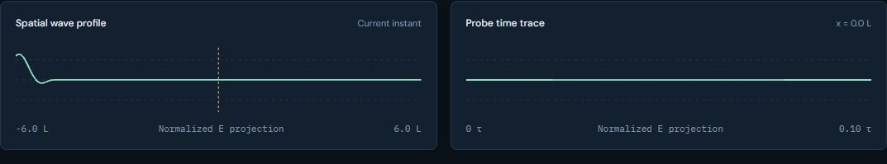
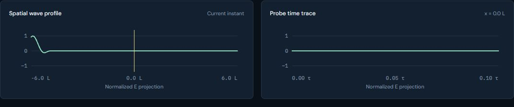
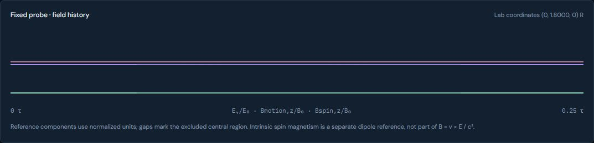
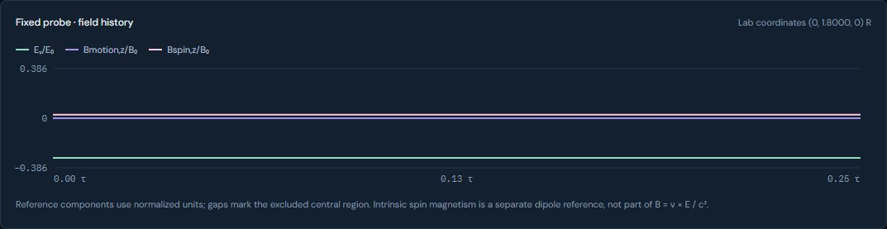
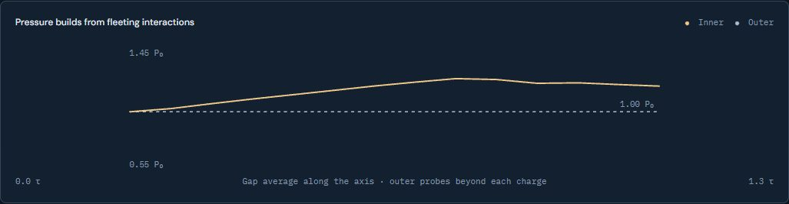
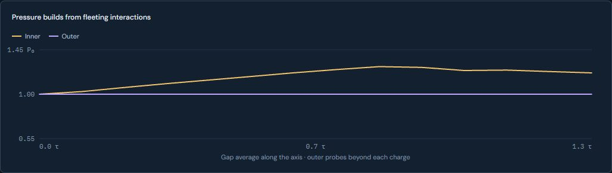
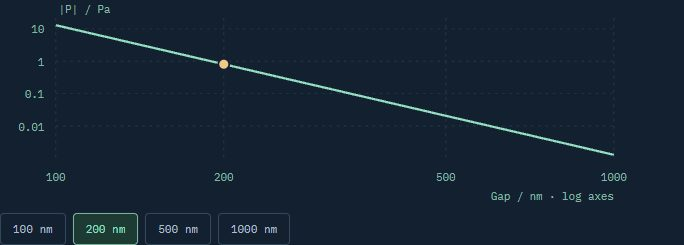
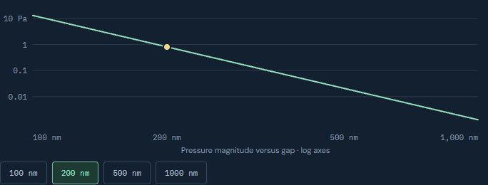

UI 03 · Shared Plot: before and after
The five lab charts drawn by one shared Plot: three ticks per axis in mono 11 px, solid hairline grid, 2 px lines with gaps for masked samples, a legend for two or more series, and a hover or keyboard crosshair that reads every series. Series colours are data tokens checked with the dataviz palette validator.
Real screens: "before" runs the layer below, and "after" runs this layer. Click an image to open it at full size. Regenerate with node scripts/compare-screens.mjs.
Medium · Population plot




Light · Spatial profile and probe trace




Electron · Fixed probe field history




Extended Casimir · Pressure history




Van der Waals · Pressure versus gap



